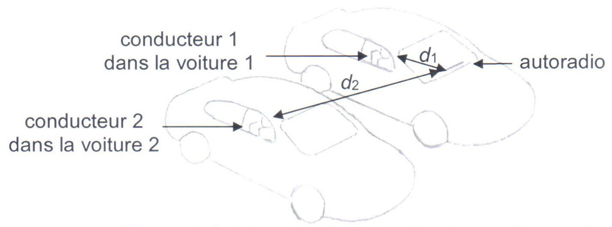

Le niveau d’intensité sonore est exprimé en décibels. L’échelle va de 0 à 120 dB. La limite de nocivité est située à 85 dB. Au-dessous, aucun risque auditif. Au-dessus, la nocivité augmente avec le niveau. On trouve des valeurs supérieures à 90 dB dans la vie professionnelle, les activités de loisir (fêtes, sports mécaniques) et la musique.
On peut lire dans un guide d’information de la journée nationale de l’audition l’affirmation suivante : « vous êtes exposés à 85 dB et plus si, dans une file de voiture, votre voisin entend votre autoradio toutes vitres fermées. »
L’objectif de cet exercice est de vérifier l’affirmation du guide d’information.
Données
- Le niveau d’intensité sonore $L$ est lié à l’intensité sonore $I$ par la relation :
$$ L = 10\; \log \left( \dfrac{I}{I_0} \right) $$ avec $I_0$ l’intensité sonore de référence en watt par mètre carré, $L$ en décibels et $I$ en watt par mètre carré.
- Schéma représentant les deux voitures côte à côte 
Étude du son perçu par les conducteurs de deux voitures ayant les fenêtres baissées
Dans la voiture 1, le conducteur 1 allume son autoradio. L’oreille du conducteur 1 est située à une distance $d_1$ égale à 1,0 m de l’autoradio. Les fenêtres de la voiture sont baissées. Dans la voiture 2, les fenêtres sont également baissées. L’oreille du conducteur 2 est située à une distance $d_2$ égale à 3,1 m de l’autoradio de la première voiture.
Dans cette première partie, on considérera que l’atténuation de l’onde sonore ne dépend que de la distance entre la source et le récepteur et que la source est ponctuelle.
Donnée
- Dans le modèle de l’atténuation géométrique, et pour une source ponctuelle, l’intensité sonore $I$ perçue à une distance $d$ de la source est reliée à la puissance sonore $P$ de cette source par la relation :
$$ I = \dfrac{P}{4\pi\,d^2} $$ avec $P$ la puissance de l’onde sonore en watt et $d$ la distance à la source en mètre.
- Exprimer l’intensité sonore $I_1$ reçue par le conducteur 1 en fonction de la puissance sonore $P$ et de $d_1$ puis exprimer l’intensité sonore $I_2$ reçue par le conducteur 2 en fonction de $P$ et de $d_2$.
Réponse
- Pour le conducteur 1 : $I_1 = \dfrac{P}{4\pi\,d_1^2}$ ;
- Pour le conducteur 2 : $I_2 = \dfrac{P}{4\pi\,d_2^2}$.
- À l’aide des données, montrer que l’atténuation géométrique $A_{geo}$ du conducteur 1 au conducteur 2 en décibels peut s’exprimer sous la forme :
$$ A_{geo} = 10\, \log \left( \dfrac{I_1}{I_2} \right) $$
Réponse
L’atténuation géométrique $A_{geo}$ de l’onde sonore du conducteur 1 au conducteur 2 est la variation du niveau sonore entre les positions des conducteurs 1 et 2 : $$ A_{geo} = L_1 - L_2 = 10\; \log \left(\dfrac{I_1}{I_0} \right) - 10\; \log \left(\dfrac{I_2}{I_0} \right) $$ ou $$ A_{geo} = 10\, \log \left( \dfrac{I_1}{I_2} \right) $$
Remarque
On peut aussi définir, de façon équivalente, l’atténuation à partir de l’expression : $$ A = 10\, \log \left( \dfrac{I_e}{I_s} \right) $$ où $I_e$ est l’intensité sonore en entrée (ici au niveau du conducteur 1) et $I_s$ l’intensité sonore en sortie (ici au niveau du conducteur 2). Mais bien sur, si on prend cette définition, il n’y a rien à faire dans cette question ; c’était donc celle à partir des niveaux d’intensité sonore qui était attendue.
- Vérifier que l’atténuation géométrique $A_{geo}$ est égale à 9,8 dB.
Réponse
Remarque : La réponse n’est pas directe car on ne connaît pas les valeurs de $I_1$ et $I_2$.
$$ A_{geo} = 10\, \log \left( \dfrac{I_1}{I_2} \right) = 10\, \log \left( \dfrac{P}{4\pi\,d_1^2} \times \dfrac{4\pi\,d_2^2}{P} \right) = 10\, \log \left( \dfrac{d_2^2}{d_1^2} \right) = 20\, \log \left( \dfrac{d_2}{d_1} \right) $$
A.N. $ A_{geo} = 20\, \log \left( \dfrac{\pu{3,1 m}}{\pu{1,0 m}} \right) = \pu{9,8} $
Dans la suite, la valeur de l’atténuation $A_{geo}$ sera arrondie à 10 dB.
En plaçant son smartphone près de son oreille et en utilisant une application sonomètre, le conducteur 1 mesure un niveau d’intensité sonore $L_1 = \pu{(80 \pm 3) dB}$. Le conducteur 2 fait de même et mesure un niveau d’intensité sonore $L_2 = \pu{(68 \pm 3) dB}$.
- À l’aide des mesures précédentes, calculer la valeur expérimentale $A_{\text{mesure}}$ de l’atténuation géométrique.
Réponse
Encore une fois, l’atténuation géométrique $A_{\text{mesure}}$ de l’onde sonore du conducteur 1 au conducteur 2 est la variation du niveau sonore entre les positions des conducteurs 1 et 2 : $A_{\text{mesure}} = L_1 - L_2 = \pu{80 dB} - \pu{68 dB} = \pu{12 dB}$
Données
- L’incertitude-type $U(A_{\text{mesure}})$ sur la grandeur $A_{\text{mesure}}$ peut se calculer à partir de la relation :
$$ U(A_{\text{mesure}}) = \sqrt{ U(L_1)^2 + U(L_2)^2 } $$ avec $U(X)$ désigne l’incertitude-type associée à la grandeur $X$.
- Le z-score, noté $Z$, correspond à l’écart entre le résultat de la mesure $X$ et la valeur de référence $X_{ref}$ évalué en nombre d’incertitude-type :
$$ Z = \dfrac{|X - X_{ref} |}{U(X)} $$ Si le z-score est inférieur à 2 alors $X$ et $X_{ref}$ sont considérés compatibles.
- Calculer l’incertitude-type de l’atténuation $A_{\text{mesure}}$.
Réponse
$ U(A_{\text{mesure}}) = \sqrt{ 3^2 + 3^2 } = \pu{4,2 dB} = \pu{5 dB}$.
- Comparer, en utilisant le z-score, l’atténuation $A_{geo}$ et l’atténuation mesurée $A_{\text{mesure}}$ et conclure sur la compatibilité de ces deux valeurs.
Réponse
$ Z = \dfrac{| \pu{12 dB} - \pu{10 dB} | }{\pu{5 dB}} = \pu{0,4} $. Puisque le z-score est inférieur à 2 la mesure est compatible avec la valeur attendue.
Étude du son perçu par les conducteurs de deux voitures ayant les fenêtres fermées
Dans cette partie, les deux conducteurs ferment entièrement leurs fenêtres et le conducteur 1 monte le volume de l’autoradio jusqu’à ce qu’il soit audible par le conducteur 2.
- À l’atténuation géométrique $A_{geo}$ s’ajoute l’atténuation due à la fermeture des deux fenêtres $A_{fen}$. Choisir la nature de cette nouvelle atténuation parmi les deux propositions suivantes : (a) atténuation géométrique ou (b) atténuation par absorption
Réponse
Il s’agit d’une atténuation par absorption.
Données
- $A_{fen} = \pu{18 dB}$ (pour les deux fenêtres) ;
- Le conducteur 2 mesure maintenant un niveau d’intensité sonore $L_2^’$ égal à 63 dB.
- Déterminer si le conducteur 1 est exposé à un niveau d’intensité sonore supérieur à la limite de nocivité.
Réponse
- On note $L_1^’$ le niveau d’intensité sonore au niveau du conducteur 1 et on suppose qu’il n’y a aucune atténuation géométrique entre l’émetteur et la fenêtre. Le niveau d’intensité sonore $L_1^{’’}$ à l’extérieur de la fenêtre du conducteur 1 est alors tel que :
$$ A_{fen} = L_1^’ - L_1^{’’} $$
- Entre le conducteur 1 et le conducteur 2, l’atténuation est due à la distance. Le niveau d’intensité sonore $L_2^{’’}$ à l’extérieur de la fenêtre du conducteur 2 est alors tel que :
$$ A_{geo} = L_1^{’’} - L_2^{’’} $$
- Puisque la vitre du conducteur 2 absorbe une partie de l’onde sonore, le niveau d’intensité sonore $L_2^’$ à l’intérieur de la voiture 2 est donc tel que :
$$ A_{fen} = L_2^{’’} - L_2^{’} $$
On remarque que $$ A_{fen} + A_{geo} + A_{fen} = L_1^’ - L_1^{’’} + L_1^{’’} - L_2^{’’} + L_2^{’’} - L_2^{’} = L_1^’ - L_2^{’} $$ ce qui conduit à : $$ L_1^’ = L_2^{’} + A_{fen} + A_{geo} + A_{fen} $$
A.N. $L_1^’ = \pu{63 dB} + \pu{18 dB} + \pu{10 dB} = \pu{91 dB}$ Le niveau d’intensité sonore au niveau du conducteur 1 est donc supérieur à la limite de nocivité.